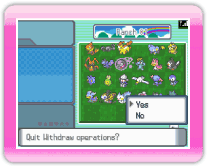

Antes de retirar Pokémon de la granja, consulta 12.
Procedimientos de conexión a una DS.
Pantalla
de DS Selecciona Withdraw Pokémon from the Ranch (sacar Pokémon de
la granja) en el menú principal de la consola DS. Se visualizará la
pantalla que se muestra a la derecha.
 Pantalla
de DS Selecciona el Pokémon que quieras sacar de la granja desde tu
consola DS. Cuando elijas WITHDRAW (sacar) aparecerá un mensaje: To
which Box would you like to deposit? (¿en qué caja te gustaría
depositarlo?). Cuando selecciones una caja podrás poner el Pokémon
en esa caja.
Pantalla
de DS Selecciona el Pokémon que quieras sacar de la granja desde tu
consola DS. Cuando elijas WITHDRAW (sacar) aparecerá un mensaje: To
which Box would you like to deposit? (¿en qué caja te gustaría
depositarlo?). Cuando selecciones una caja podrás poner el Pokémon
en esa caja.
Nota: No podrás sacar los Pokémon de
Hayley.
 Pantalla de DS Cuando termines
de sacar Pokémon, selecciona CLOSE (cerrar). Aparecerá un mensaje:
Quit Withdraw operations? (¿salir de las operaciones de sacar?).
Selecciona Yes (sí) para volver al menú principal de la consola DS.
Pantalla de DS Cuando elijas
See ya! (¡nos vemos!) en el menú principal de la consola DS,
aparecerá un mensaje: Would you like to save and quit? (¿quieres
guardar y salir?). Selecciona Yes (sí) para terminar la conexión.
Si aparece en pantalla este mensaje Data
saved. Press the A Button. (datos guardados. Oprime el Botón A),
oprime  para salir.
para salir.
Funciones útiles para sacar
 Pantallas
de DS Cuando saques un Pokémon de la granja podrás ordenar los
Pokémon que quieras sacar o refinar la búsqueda en la pantalla
inferior en la consola DS [pantalla táctil].
Pantallas
de DS Cuando saques un Pokémon de la granja podrás ordenar los
Pokémon que quieras sacar o refinar la búsqueda en la pantalla
inferior en la consola DS [pantalla táctil].
Puedes ordenar o refinar los Pokémon que elijas mediante otra
sección.
Sort Pokémon
(ordenar Pokémon)
Basic
(básico) |
Deposited
(depositado) |
Pokédex No.
(número en la Pokédex) |
| Name (nombre) |
Nickname (apodo) |
| Level (nivel) |
Item (objeto) |
| Stats (habilidades) |
HP |
Attack (ataque) |
| Defense (defensa) |
Sp. Atk (ataque especial) |
| Sp. Def (defensa especial) |
Speed (velocidad) |
| Other (otros) |
WT (peso) |
HT (altura) |
Nota: Para empezar, los Pokémon se ordenan por Deposited
(depositados). Al seleccionar Deposited (depositados) podrás elegir
una sección diferente para ordenar.
Refine Search (refinar la
búsqueda)
| Name (nombre) |
Refinar por nombre en orden alfabético |
| Type (tipo) |
Refinar por tipo (siniestro, roca, etc.) |
| Move (movimiento) |
Refinar por los movimientos de los Pokémon (machada,
cola férrea, etc.) |
| Ability (habilidad) |
Refinar por habilidad de los Pokémon (gélido, hedor,
etc.) |
| Nature (naturaleza) |
Refinar por naturaleza de los Pokémon (audaz, impulsivo,
etc.) |
| Mark (marcas) |
Refinar por una marca que coloques (círculo, triángulo,
etc.) |
¡Atención!
- Cuando depositas un Pokémon en la granja, ese Pokémon será
eliminado de la tarjeta DS de Pokémon Diamond o Pokémon
Pearl.
- Cuando sacas un Pokémon de la granja, ese Pokémon volverá
a la tarjeta DS de Pokémon Diamond o Pokémon Pearl.